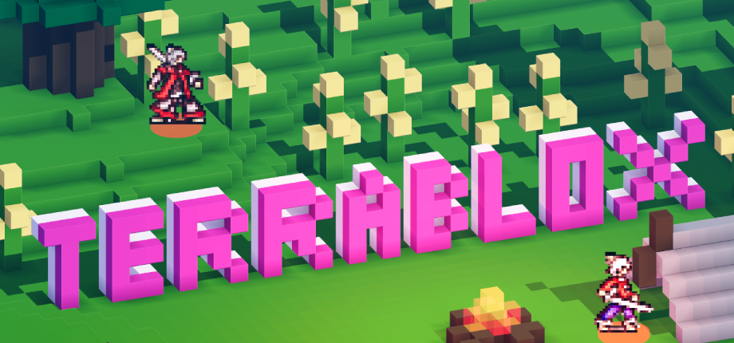
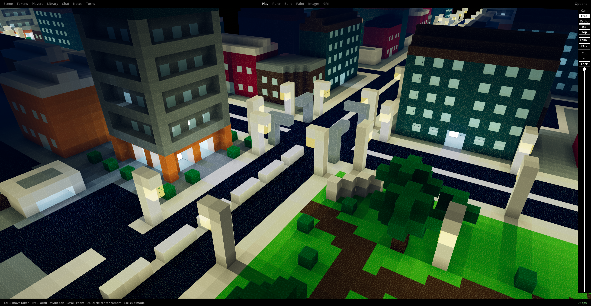
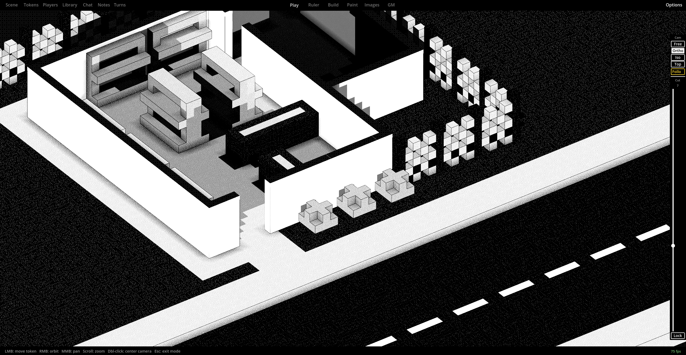
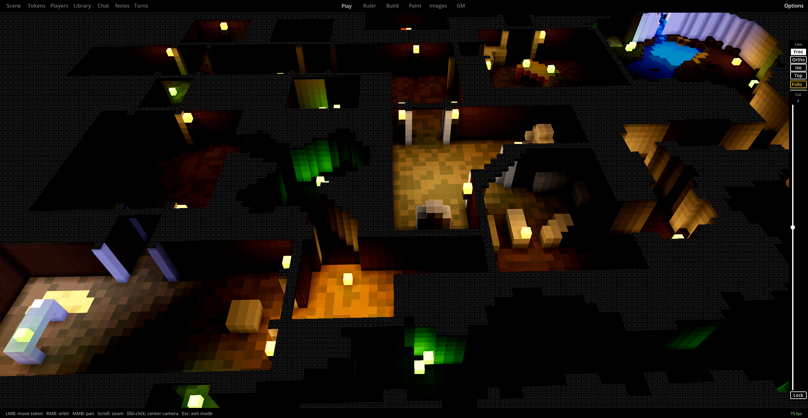
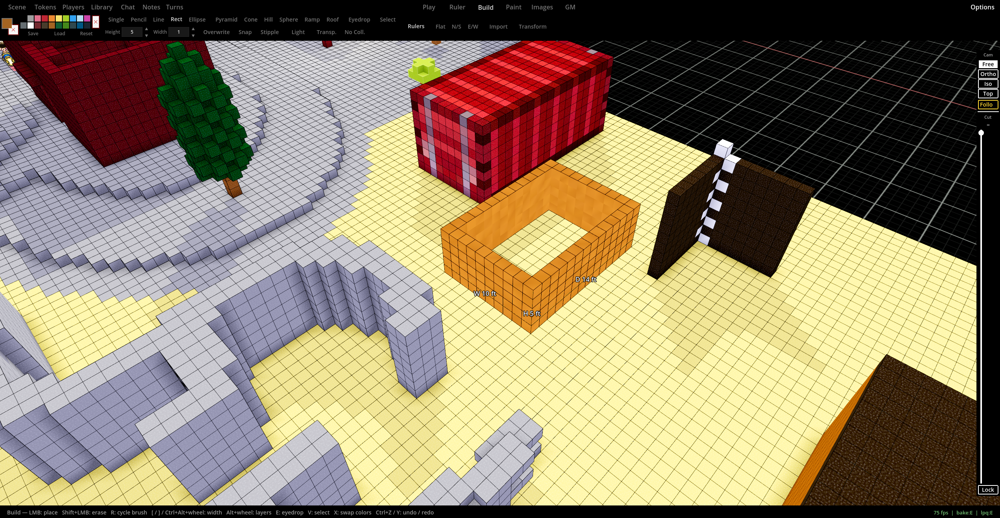
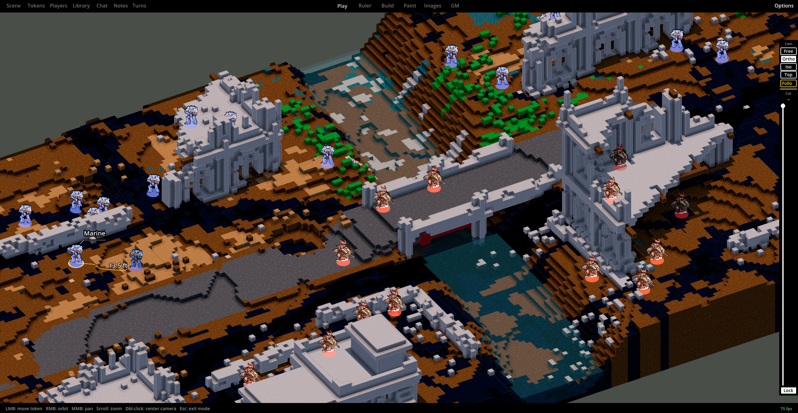
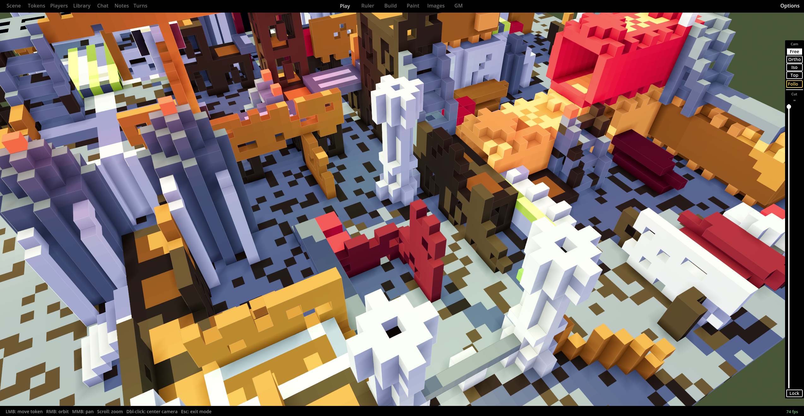
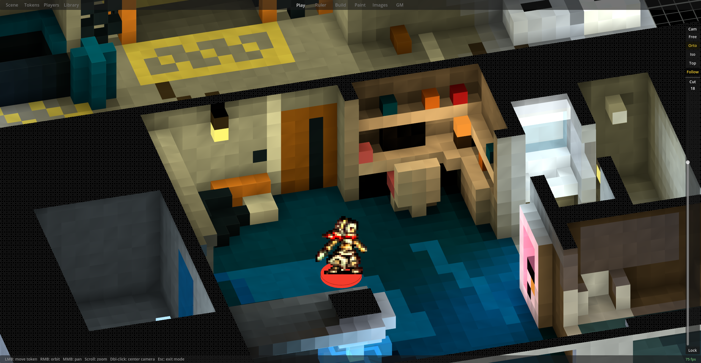
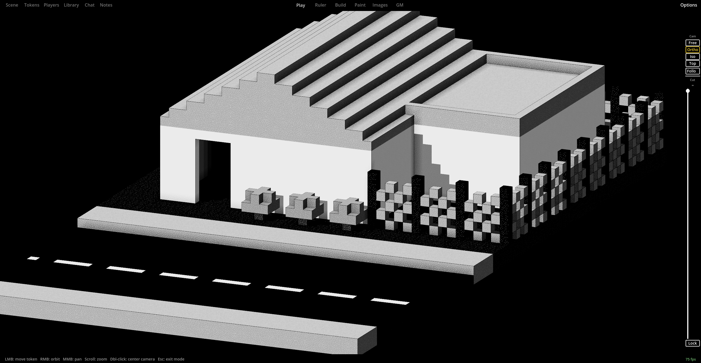

Terrablox

A voxel-based virtual tabletop. Everything is made of colored blocks, so it's fast to build a scene and it's not tied to any one art style, genre, or scale.
What Is Terrablox?
Terrablox is a virtual tabletop where everything is voxels. Terrain, buildings, ruins, whole cities, all built out of colored blocks instead of pre-made assets. Because it's all just blocks, you're not stuck with one art style or scale. The same tools that build a crumbling dungeon can build a modern city block.

Left-click painting and a set of 3D shape tools (ramps, pyramids, cylinders, hills) make it quick to throw a scene together. Then you can layer in fog of war, lighting, and tokens without switching to a different program.

Core Features
Building Tools
Fast voxel construction with left-click painting, brush shapes (line, rect, pyramid, cone, sphere, ramp, roof), fill, eyedropper, and layer stacking.
3D Fog of War
Real 3D line of sight per team, not a 2D circle pasted on a flat map. Vision can be shared across a team or kept individual.
Voxel Lighting
Light actually propagates through the grid: sunlight, ambient light from the sky, colored and flickering emitter blocks, and lights carried by tokens.
Tokens & Standees
Import any image as a standee, scale it to whatever size you need, and track HP, AC, conditions, and your own custom stat templates.
Copy/Paste & Library
Select a volume and copy it as plain text, then paste it anywhere, rotated or flipped if you need. Save the ones you like to a reusable library.
MagicaVoxel Import
Bring in .vox models directly, no conversion step. They come in as a new scene or as a pasteable slab.

Built for Running the Table
There's a free orbit camera, orthographic, isometric with five pitch levels, top-down, and a first-person view for walking a scene at eye level. There's a cut-plane too, to peel back the roof or upper floors to see or work on interior spaces.
GM tools cover the usual table needs: a turn tracker, notes at both the campaign and scene level, a dice roller, and per-player permissions. There's also a "prop" system: any selectionof blocks can be turned into an object that moves and rotates independently, like a door, a cart, or a piece of siege equipment.
It's all just blocks, so the same tools work at any scale. A wind-scoured ruin, a cramped apartment interior, a stark black-and-white storefront, whatever the scene calls for.





Multiplayer
The Steam and itch.io versions are the same game, but they handle multiplayer differently. Multiplayer is GM-authoritative either way, and block edits, token moves, markers, props, and sounds all sync live to everyone connected. On Steam it runs over Steam's own multiplayer backend, so there's no port forwarding to mess with. The itch.io version connects over direct IP instead, which works great on LAN, and can work over the internet with port forwarding, but that's not always possible depending on your network and ISP.
Technical Details
- Engine: Godot 4
- Networking: Steam's multiplayer backend on Steam, ENet over direct IP on itch.io (LAN or port-forwarded)
- World format: Plain-text
.bloxslabs for clipboard and library, human-readable and easy to share - Import: MagicaVoxel
.vox, custom images (with optional heightmaps), standee tokens, and audio - Status: Still in development, there may be bugs. Planned release September 2026